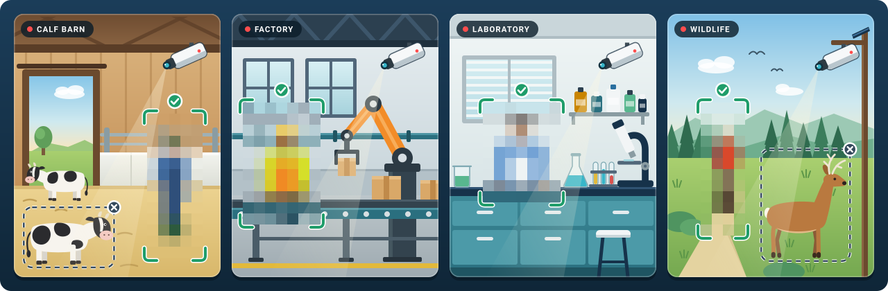
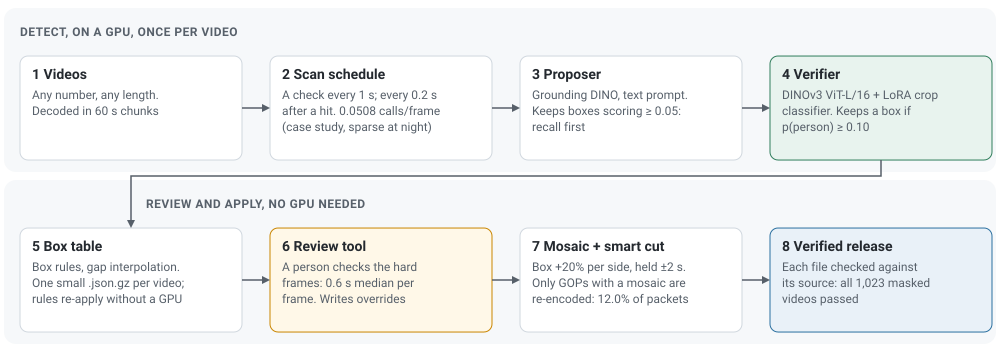
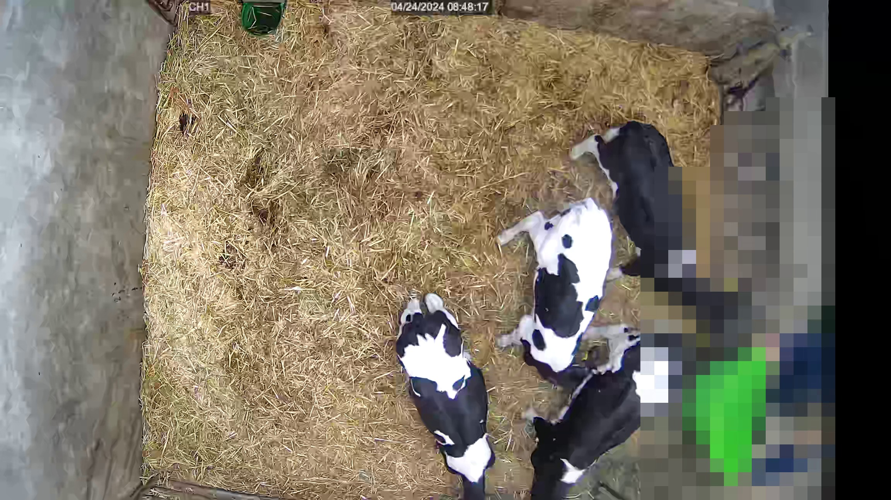
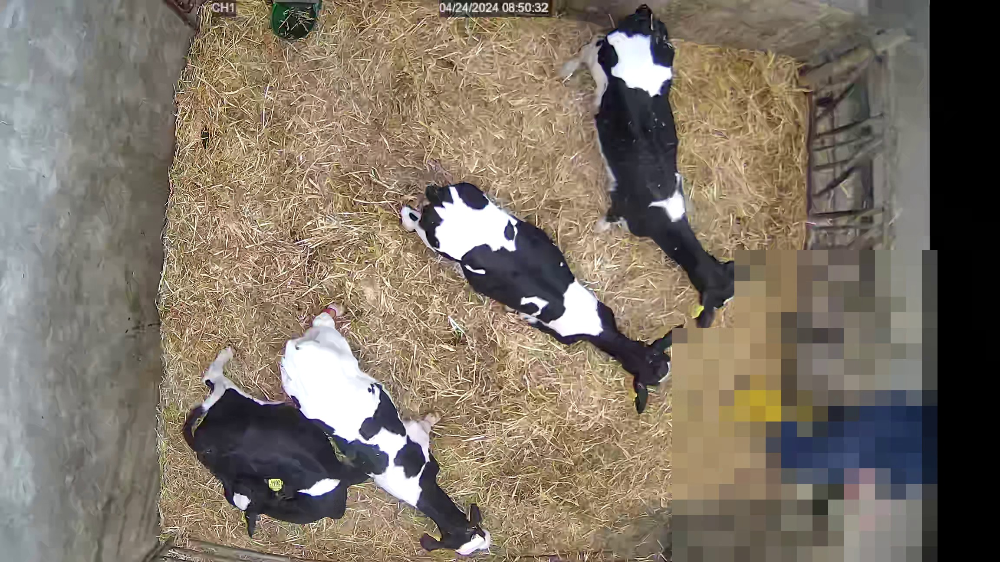
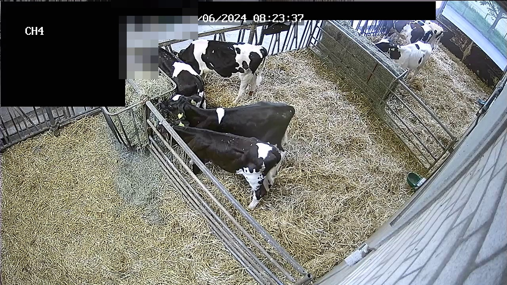
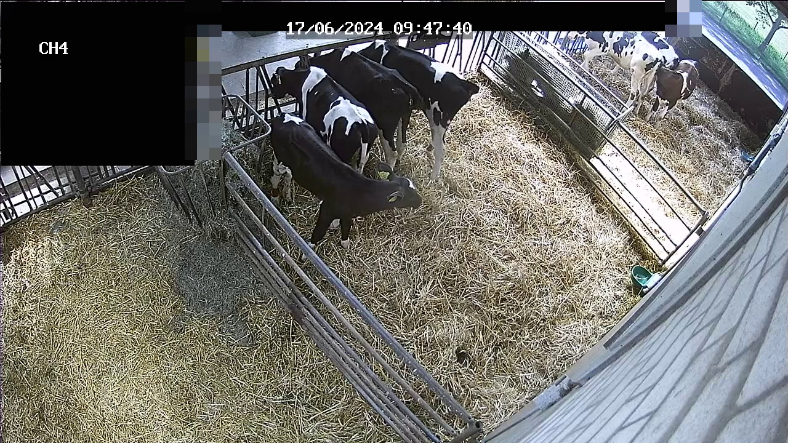
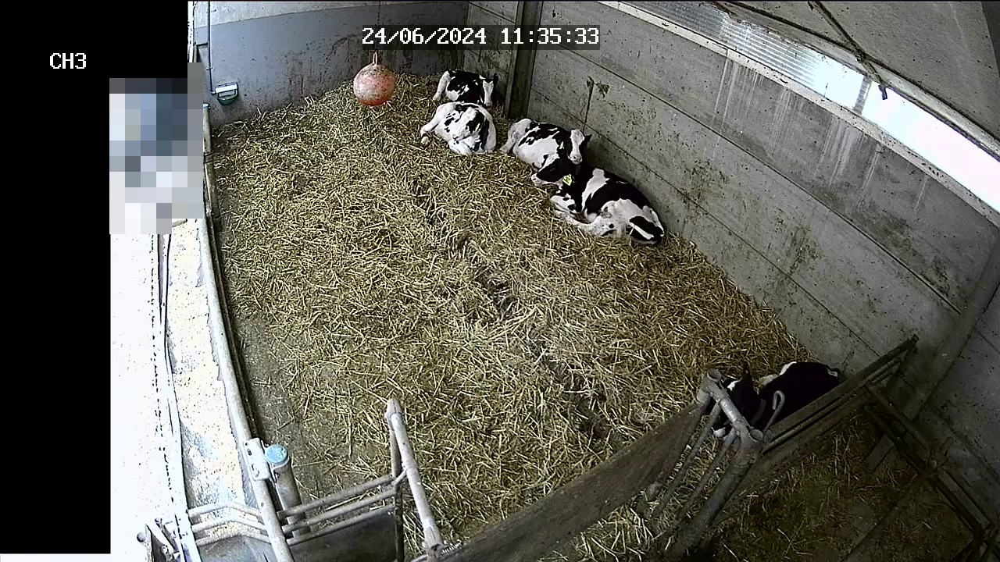
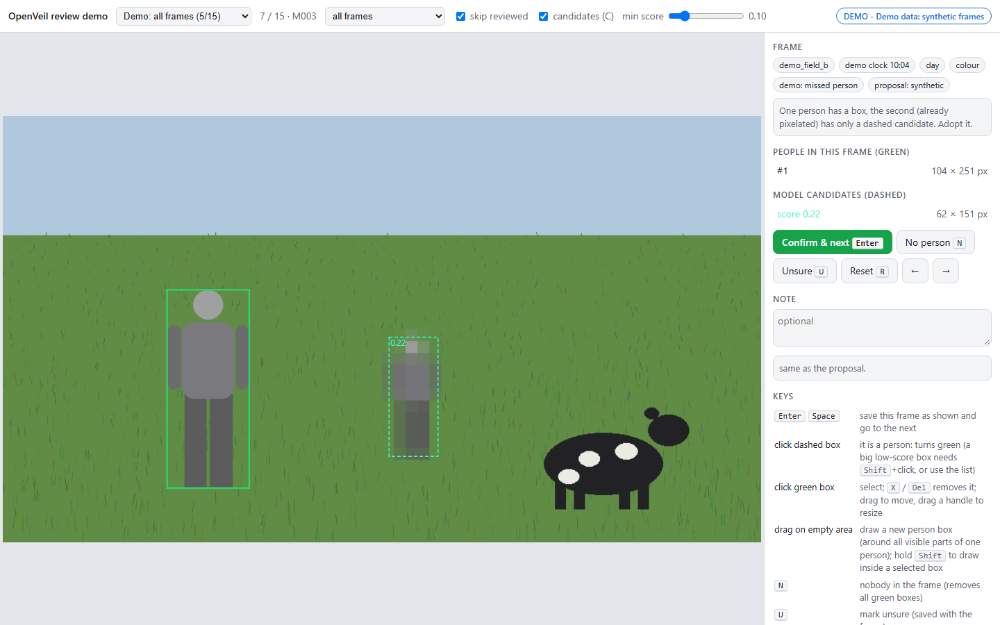
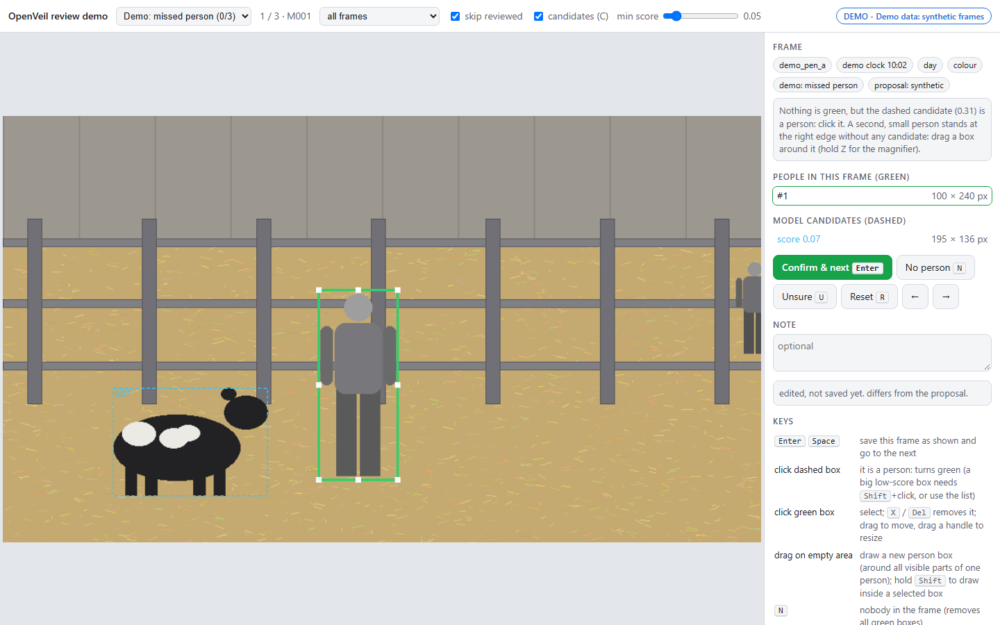

OpenVeil 1.1.0 · arXiv preprint forthcoming
Share your video dataset, not the people in it
OpenVeil: detect, verify and mosaic people in video datasets before release, with an interactive human review tool.
Footage of animals, farms, labs or streets often shows staff, visitors or bystanders who could be recognised, and that blocks open release. OpenVeil errs on the side of finding every person, lets a human check the hard frames, and mosaics them while touching as little of the footage as possible.

Why
Researchers want to share their video datasets: animal behaviour, agriculture, wildlife, laboratory work, traffic. Three things stand in the way.
- People appear in the footage. Staff, visitors and bystanders with recognisable faces and bodies block open release: privacy law, consent, institutional rules.
- Masking by hand does not scale. Thousands of hours of video cannot be checked frame by frame.
- Off-the-shelf detectors fail both ways. They miss people in odd poses, or put mosaics all over the animals you want to study.
OpenVeil was built to release a calf play-behaviour dataset of 1,173 videos, about 50.8 million frames, from two farms.
How it works

Detect, on a GPU
A checkpoint runs every second; after a hit the detector runs every 0.2 s until the scene is clear for 2 s. Grounding DINO proposes boxes at a low threshold (score ≥ 0.05), and a DINOv3 ViT-L/16 crop classifier with a LoRA adapter keeps those that show a person (p ≥ 0.10). Each video gets one small box table.
Review, on any laptop
The review tool shows the frames most likely to be wrong: the largest mosaics, giant-rule episodes and a random sample. A reviewer fixes boxes with the mouse and keyboard, and the corrections are exported as an overrides file. Every rule after detection can be re-applied without a GPU.
Apply, on a CPU
Each box is enlarged by 20 % per side and held for ±2 s, and grid cells that touch it take their mean colour. Only the groups of pictures (GOPs) that contain a mosaic are re-encoded; every other packet is copied bit for bit. Every output is checked against its source.

Every stage in detail: how it works. What we tried and why: design rationale.
Results
From the case study: 1,173 videos of calf barns on two farms, colour by day and infrared at night. HUM731 is 731 everyday frames checked by a human (52 with people), weighted back to 2,000 sampled frames. VAL261 is 261 validation frames enriched with partial and missed people.
| Measure | Result | Evaluation set |
|---|---|---|
| People covered (≥ 90 % of their area under a mosaic) | 172 / 172 | HUM731 |
| Frames with a false mosaic box | 3.3 % | HUM731 (0.45 % with a big one, ≥ 15 % of the image) |
| Recall on hard validation frames, loose matching | 0.862 | VAL261, full pipeline, production schedule |
| False mosaic area | 0.22 % | VAL261, schedule replay |
| Detector calls per frame | 0.0508 | Whole dataset, clock day/night policy |
| Video frames carrying a mosaic | 6.8 % | Whole release (11.7 % of the 1,106,110 JPEG frames) |
| Video packets re-encoded | 12.0 % | 1,023 masked videos; all others bit-exact |
| Masked files passing the automatic check | all | 1,023 videos, 270 frame shards |
| Human review, median per frame | 0.6 s | 3,194 frames in about 2.4 h |
Loose matching counts a person as found if any mosaic box matches (IoU ≥ 0.5) a box drawn on any part of them. VAL261 is scored by the released model, whose training data include other minutes of most of the same videos, so it is not a held-out estimate; HUM731 is not held out either: each frame was scored by a model that had not seen its video but was trained on the other half of the HUM731 videos (cross-fitting), its boxes were drawn while checking the pipeline's proposals, so a person missed by both the pipeline and the reviewer cannot appear in it, and the 0.10 threshold was set with HUM731 in view. Its full coverage therefore holds partly by construction.
Why a cascade
Open-vocabulary detectors find people in odd poses but cannot tell a crouching worker from a calf; detectors trained on the target data are precise but miss people. A proposer plus a strong crop classifier keeps the recall of one and most of the precision of the other.
| Approach | Recall | False mosaics | Verdict |
|---|---|---|---|
| YOLO11x + OWLv2 + tracking (pilot) | 44 / 53 person events fully masked | 67 % of masked area on animals or objects | Rejected |
| Pilot + fixed privacy zones | 53 / 53 events | Masks on 32.4 % of all frame area | Rejected |
| Grounding DINO alone | VAL261: 0.876 (loose) | 59.2 % of person-free frames got a mosaic (4.57 % of their area) | Kept as proposer |
| LocateAnything-3B | VAL261: 0.772 | 49.3 % of person-free frames; 1.99 s per frame | Rejected |
| YOLO11l fine-tuned in-domain | VAL261: 0.634 | 4.9 % of person-free frames | Rejected (recall) |
| Grounding DINO + DINOv3 ViT-S verifier | 95 % of labelled people | 47 % of colour frames keep a false mosaic | Rejected |
| Grounding DINO + DINOv3 ViT-L LoRA verifier | HUM731: 172 / 172; VAL261: 0.862 | 3.3 % of everyday frames | Adopted |
Examples
Frames of the released, masked case-study dataset, shown with the data owner's approval. No unmasked person is shown. In the last five (FarmA_R3, plus hard cases from FarmA_R2 and FarmB_R1: small or partly visible people that the pipeline still found and masked) a human reviewer also confirmed that every person is covered, and added no box. Click a frame to enlarge it.











Review tool
A single local web page with a standard-library Python server. Green boxes are the people the pipeline proposes; dashed boxes are the model's other candidates with their scores. Every save is written to disk at once. The screenshots show the synthetic demo: drawn frames, no real people.




| Key or action | What it does |
|---|---|
| Enter | The frame is right: save it and go to the next |
| Click a dashed box | Adopt the candidate as a person |
| Drag | Draw a new box, or move and resize a selected one |
| X | Delete the selected box |
| N / U | Nobody in the frame / mark the frame unsure |
| Hold Z | Magnifier |
The server listens on 127.0.0.1 only. The review folder holds unmasked frames: never share it. Full tutorial: docs/review_tool.md.
Get started
OpenVeil needs Python ≥ 3.10. Try the review tool first; it needs no GPU and no data.
git clone https://github.com/Sonam525/OpenVeil.git openveil && cd openveil
pip install -e ".[video,detect,review]"
openveil review demo # synthetic frames, http://127.0.0.1:8766Detection runs best on a CUDA GPU (--device cpu works, slowly) and needs the gated DINOv3 ViT-L/16 base model (accept Meta's DINOv3 License on its Hugging Face page and log in) and the verifier weights; review and apply run on a CPU. Then mask your own videos:
openveil detect videos/*.mp4 --out tables/ --config my_config.yaml --device cuda
openveil review build --tables tables/ --videos videos/ --out review/
openveil review serve review/ # http://127.0.0.1:8765
openveil review export review/ --overrides overrides.json
openveil apply video videos/cam1.mp4 --table tables/cam1.json.gz \
--out masked/cam1.mp4 --overrides overrides.json
openveil verify videos/cam1.mp4 masked/cam1.mp4The defaults are the evaluated case-study settings, including the Grounding DINO prompt worker. person. cow. calf. that the verifier was trained with; only the day/night policy differs (a full scan day and night). The prompt names the barn animals so that they are put forward less often as people and the verifier knows them as negatives; for footage with other animals, replace cow and calf.
Every command, still images and tar shards, a config file and the model-free trial run: docs/usage.md. Every setting: docs/configuration.md.
Weights
Built with DINOv3. The crop verifier of the case study, a LoRA adapter (rank 32) and an MLP head on DINOv3 ViT-L/16, is on the Hugging Face Hub as Sonam5/OpenVeil-Verifier-DINOv3-ViT-L16, under the DINOv3 License. The DINOv3 backbone is not included and no merged model is provided: download it yourself from Meta's gated repository.
from huggingface_hub import snapshot_download
snapshot_download("Sonam5/OpenVeil-Verifier-DINOv3-ViT-L16",
local_dir="weights/OpenVeil-Verifier-DINOv3-ViT-L16")| File | Content |
|---|---|
adapter_config.json, adapter_model.safetensors | LoRA adapter (PEFT format, rank 32), 56.7 MB |
head.safetensors | MLP head (1024 → 1024 → 512 → 2), 6.3 MB |
meta.json | Training recipe and preprocessing |
SHA256SUMS | Checksums of the four files above |
LICENSE, NOTICE | The DINOv3 License and the attribution |
Check the download with sha256sum -c SHA256SUMS inside that folder. Trained and checked with transformers 4.57.1 and peft 0.13.2; transformers 5 renames the DINOv3 modules, so OpenVeil requires transformers>=4.56,<5. Training data, metrics and limits: model card.
Licences
| Item | Terms |
|---|---|
| Code | Apache-2.0 |
| Verifier weights | DINOv3 License, published separately with a copy of it. Not Apache-2.0 |
| DINOv3 ViT-L/16 base model | DINOv3 License, gated with manual approval by Meta |
| Grounding DINO base | Apache-2.0, downloaded at run time |
| FFmpeg, x264, x265 | Reached through PyAV, which you install. Its wheels bundle FFmpeg linked with x264 and x265 (GPL-2.0-or-later). Not redistributed by OpenVeil; masked outputs are not GPL |
The DINOv3 License requires acknowledging DINOv3 in publications of results and restricts some uses, for example end uses prohibited by trade controls. Encoding H.264/HEVC may need patent licences for commercial use. Details: THIRD_PARTY.md. This is not legal advice.
Citing OpenVeil
Each OpenVeil release is archived on Zenodo, which assigns it a version DOI. Current release: 1.1.0 (2026-11-24; changelog).
DOI: 10.5281/zenodo.24505557. This concept DOI cites all versions and resolves to the latest one; the version DOI of each release is on its Zenodo record. Please cite the concept DOI, or the version DOI of the version you used (CITATION.cff). An arXiv preprint is forthcoming. Until then, please cite the software:
@software{yang2026openveil,
author = {Yang, Haiyu and Hostens, Miel},
title = {{OpenVeil}: Detect, verify and mosaic people in video datasets
before release, with an interactive human review tool},
version = {1.1.0},
year = {2026},
publisher = {Zenodo},
doi = {10.5281/zenodo.24505557},
url = {https://github.com/Sonam525/OpenVeil},
license = {Apache-2.0}
}
@misc{simeoni2025dinov3,
title = {{DINOv3}},
author = {Sim{\'e}oni, Oriane and Vo, Huy V. and Seitzer, Maximilian and
Baldassarre, Federico and Oquab, Maxime and Jose, Cijo and
Khalidov, Vasil and Szafraniec, Marc and Yi, Seungeun and
Ramamonjisoa, Micha{\"e}l and Massa, Francisco and
Haziza, Daniel and Wehrstedt, Luca and Wang, Jianyuan and
Darcet, Timoth{\'e}e and Moutakanni, Th{\'e}o and
Sentana, Leonel and Roberts, Claire and Vedaldi, Andrea and
Tolan, Jamie and Brandt, John and Couprie, Camille and
Mairal, Julien and J{\'e}gou, Herv{\'e} and Labatut, Patrick and
Bojanowski, Piotr},
year = {2025},
eprint = {2508.10104},
archivePrefix = {arXiv},
primaryClass = {cs.CV},
url = {https://arxiv.org/abs/2508.10104}
}
@misc{yang2026calfplaydata,
title = {{Calf-Play-Behavior-Dataset}},
author = {Yang, Haiyu and Lesscher, Heidi and Liu, Enhong and Hostens, Miel},
year = {2026},
version = {1.2},
publisher = {Hugging Face},
doi = {10.57967/hf/11689},
url = {https://huggingface.co/datasets/Sonam5/Calf-Play-Behavior-Dataset}
}
@misc{yang2026calfplay,
title = {Video recordings and play behaviour annotations of group-housed dairy calves on two {Dutch} farms},
author = {Yang, Haiyu and Lesscher, Heidi and Liu, Enhong and Hostens, Miel},
year = {2026},
eprint = {2611.21706},
archivePrefix = {arXiv},
primaryClass = {cs.CV},
url = {https://arxiv.org/abs/2611.21706}
}- If you use the verifier weights, please also cite DINOv3 (arXiv:2508.10104, second entry above); the DINOv3 License requires acknowledging it.
- Case-study data: the Calf Play Behavior Dataset, version 1.2 (the masked release, made with OpenVeil; DOI 10.57967/hf/11689), described in a data descriptor (arXiv:2611.21706, under review at Scientific Data). Third and fourth entries above.